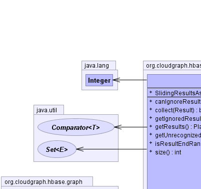
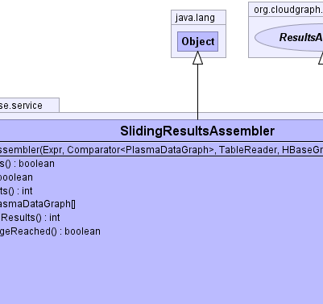
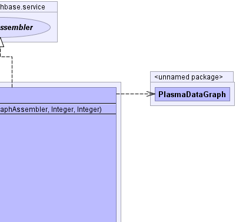
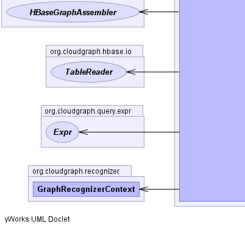
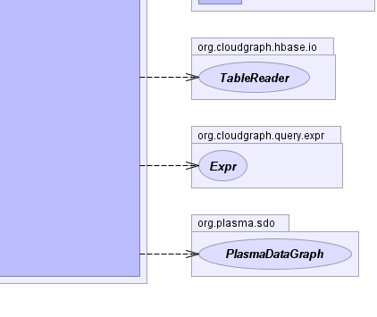

public class SlidingResultsAssembler extends java.lang.Object implements ResultsAssembler
HBaseGraphAssembler,
Expr,
GraphRecognizerContext|  |  |  |
|  |  |
| Constructor and Description |
|---|
SlidingResultsAssembler(Expr graphRecognizerRootExpr,
java.util.Comparator<PlasmaDataGraph> orderingComparator,
TableReader rootTableReader,
HBaseGraphAssembler graphAssembler,
java.lang.Integer startRange,
java.lang.Integer endRange) |
| Modifier and Type | Method and Description |
|---|---|
boolean |
canIgnoreResults()
Returns whether results may be ignored under the current context.
|
boolean |
collect(Result resultRow)
Determines whether the given row is to be added to the underlying
collection returning true if the given row is added and false if the given
row is not added.
|
int |
getIgnoredResults() |
PlasmaDataGraph[] |
getResults()
Returns results
|
int |
getUnrecognizedResults() |
boolean |
isResultEndRangeReached() |
int |
size()
Returns the current size of the collection
|
public SlidingResultsAssembler(Expr graphRecognizerRootExpr, java.util.Comparator<PlasmaDataGraph> orderingComparator, TableReader rootTableReader, HBaseGraphAssembler graphAssembler, java.lang.Integer startRange, java.lang.Integer endRange)
public boolean collect(Result resultRow)
throws java.io.IOException
ResultsAssemblercollect in interface ResultsAssemblerjava.io.IOExceptionresultRow - the rowpublic int getUnrecognizedResults()
getUnrecognizedResults in interface ResultsAssemblerpublic int getIgnoredResults()
getIgnoredResults in interface ResultsAssemblerpublic boolean isResultEndRangeReached()
isResultEndRangeReached in interface ResultsAssemblerpublic PlasmaDataGraph[] getResults()
ResultsAssemblergetResults in interface ResultsAssemblerpublic boolean canIgnoreResults()
ResultsAssemblercanIgnoreResults in interface ResultsAssemblerpublic int size()
ResultsAssemblersize in interface ResultsAssemblerCloudGraph® is a registered trademark of TerraMeta Software, Inc. Copyright © 2014 - All Rights Reserved.